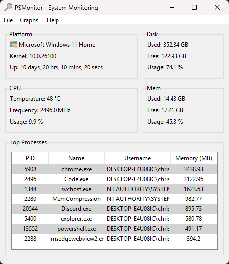

PSMonitor
- A simple system monitoring utility.
Download PSMonitor
Track and manage your system health in real-time. Lightweight, modern, and includes remote monitoring out of the box.
More Downloads:
MIT Licensed · Source on GitHub
